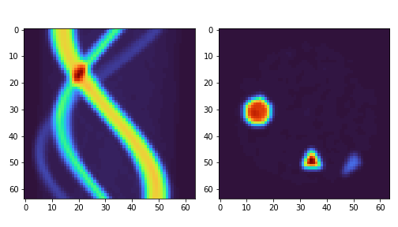
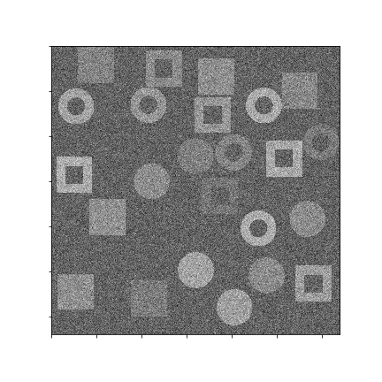

Tutorials¶
Tomographic reconstructions¶
Reconstruction with a CNN¶
In this tutorial we will reconstruct an image from a sinogram using a convolutional neural network. We have a network architecture for this task: models.cnn_reconstruct.models.reconstruct_cnn
Step 0¶
Generate the data. We have some scripts to generate sample data for this task. LibShapes.py Alternatively download sample data from here: http://tiny.cc/vdl9rz
{kind=link}
Step 1¶
When the data is generated we now load it up. Use the utils.tools.read_reconstruct_library helper function to make this easier. We then shuffle around the image/sinogram pairs to make sure that we don’t have any false ordering. We alsoe need to make sure that superres-ml is on our pythonpath. Split the data into training and test data.
from utils.tools import read_reconstruct_library
import sys
sys.path.append('/path/to/super-resolution-ml/')
images, sinos, nim = read_reconstruct_library('data/reconstruction/shapes_random_noise_64px_norm.h5')
index = np.arange(nim)
np.random.shuffle(index)
images = images[index,:,:,:]
sinograms = sinos[index,:,:,:]
sinograms_test = sinograms[9000:]
images_test = images[9000:]
sinograms = sinograms[:9000]
images = images[:9000]
Step 2¶
Set up the network. We import the reconstruct_cnn netowrk from out superres-ml model library. We then compile the network to use the Adam optimiser and to monitor the mae and mse during training. We add a callback, which makes the training stop if the metrics have not improved for three steps.
from tensorflow.keras.optimizers import Adam
from tensorflow.keras.callbacks import EarlyStopping
from models.cnn_reconstruct.models import reconstruct_cnn
model_rec = reconstruct_cnn(sinos.shape[1], sinos.shape[2])
model_rec.compile(optimizer = Adam(lr = 0.000025), loss = 'mean_squared_error', metrics = ['mae', 'mse'])
my_callbacks = [EarlyStopping(patience=3)]
Step 3¶
Train the model!
training = model_rec.fit(sinograms, images,
validation_split = 0.1,
batch_size=32,
epochs = 100,
verbose = True,
callbacks=my_callbacks)
history = model_rec.history
Segmentation of X-ray images¶
Binary segmentation¶
This tutorial looks at segmentation of sections of an image, for example collected from X-ray imaging. We have a set of images where we have already labelled what the different parts of the image are, now we want to train and apply a model to another set, labelling new X-ray images.
{kind=link}
To do this we will use a U-net architecture. There is one big challenge in using most U-net architectures that you will find on the web.
The image sizes are very large. This means that the image and the model cannot fit together in the memory.
To overcome the problem we will use a routine in superres-tomo to create patches from the image and learn sequentially from each patch. To do do this we have implemented the data_handeling.generators.mask_patch_from_file function which acts as a generator to feed the network for training.
Step 0¶
Generate the data. There is a helper script in the directory data/segmentation run this to generate the data for this tutorial. Run this script to generate the data for this tutorial.
Also make sure the superres-ml package is in your pythonpath
import sys
sys.path.append('/path/to/super-resolution-ml/')
Step 1¶
Once the data is in place we are ready to start setting up the U-net. Tell the code where to find the images and masks, the types of file to expect.
datapath= 'data/segmentation/train/' #<the root directory of images and masks for training>
valpath= 'data/segmentation/val/' #<the root directory of images and masks for validation>
img_dir= 'noiseless/' # <the subdirectory where images are>
mask_dir= 'label/' #<the subdirectory where masks are>
ftypes= ['./tiff'] # (<filetypes to look for>) # e.g. ('.tif')
Step 2¶
Set up the information about the size of the original image and the size of the patches to take from the image. Also here you can define a list of which patches to use. This last feature is useful when the interesting features are only in a section of the image. You can specify the particular patches to consider for the training. The numbering of patches starts from zero and proceeds left to right top to bottom. If the patch list is left empty the generator uses all patches.
image_shape = (1280, 1280)
patch_shape = (64, 64)
patch_range = []
Step 3¶
Set up the generator. This is the function that will flow the patches from the images to the netowrk for training.
from data_handeling.generators import mask_patch_from_file
myGene = mask_patch_from_file(datapath,
img_dir, mask_dir,
patch_shape, image_shape,
types = ftypes, patch_range=patch_range,
debug=False,
batch_size = 1,
normalise_images=False)
valGene = mask_patch_from_file(valpath,
img_dir, mask_dir,
patch_shape, image_shape,
types = ftypes, patch_range=patch_range,
debug=False,
batch_size = 1,
normalise_images=False)
Step 4¶
Define the netowrk architecture, the hyperparameters and the training time. Here the input size is the dimension of the patches, also we have just 1 channel as the image is greyscale. We use a standard Adam optimiser. We use binary_crossentropy as the loss function and also monitor the accuracy during training.
from models.u_net.model import unet_3layer
import models.losses.custom_loss_functions as losses
from tensorflow.keras.optimizers import Adam
model = unet_3layer(input_size = (patch_shape[0], patch_shape[1], 1))
opt = Adam()
model.compile(loss=losses.weighted_cross_entropy(2), optimizer=opt,
metrics=["accuracy"])
Step 5¶
Train and save!
epochs = 6
steps_per_epoch = 2000
model.fit(myGene, steps_per_epoch=steps_per_epoch,
epochs=epochs, validation_data=valGene, validation_steps=100)
model.save_weights('saved_weights.hdf5')
Step 6¶
Run the model for inference. Having trained the model on some images you can now try to deploy on
new examples. We have the utils.tools.inference_binary_segmentation() helper
function to do this. First we load up the saved model and weights.
from utils.tools import inference_binary_segmentation
datapath = 'data/segmentation/test/noiseless/'
patch_shape = (64, 64)
image_shape = (1280, 1280)
savepath = './inferred_masks/'
inference_binary_segmentation(datapath, patch_shape, image_shape, model,
file_prefix='binary_mask', savepath=savepath, fig_size=(8, 8),
normim=False)
In the inferred_masks directory there should now be a masking file something like:

Denoising of X-ray images¶
Variational Autoencoder¶
Often images that are reconstructed contain low signal to noise ratios, if the dose was low or the collection time short. In these cases it would often be desireable to remove the noise and accentuate the signal in an image. We can do this using a Variational Autoencoder (VAE)

Step 0¶
Set up the data. You can use the data/denoising/generatedata.py script to generate some example data. Then use the helper functions build_list_images and build_autoencoder_data to build the data set ready to train the VAE.
We need to specify the data shape with the input_data keyword and then specify directories to find the training and validation inputs and labels.
import sys
sys.path.append('/path/to/super-resolution-ml/')
from data_handeling.tools import build_list_images
from models.autoencoder.tools import build_autoencoder_data
input_data = (64, 64, 1)
datapath = '../data/denoising/train/noisy/'
Xfiles = build_list_images(datapath, types = ['.tiff'])
datapath = '../data/denoising/train/noiseless/'
yfiles = build_list_images(datapath, types = ['.tiff'])
X, labels = build_autoencoder_data(Xfiles, yfiles=yfiles, input_data=input_data)
datapath = '../data/denoising/test/noisy/'
Xfiles = build_list_images(datapath, types = ['.tiff'])
datapath = '../data/denoising/test/noiseless/'
yfiles = build_list_images(datapath, types = ['.tiff'])
xtest, ltest = build_autoencoder_data(Xfiles, yfiles, input_data=input_data)
Step 1¶
Set up the VAE. Here we import the model as well as functions to train and run the model and an optimiser. We need to set the number of units to use in the bottle-neck (latent) space.
from models.autoencoder.models import CVAE
from models.autoencoder.tools import vae_train, vae_inference
from tensorflow.keras.optimizers import Adam
latent_dim = 16
optimizer = Adam(lr=0.0001)
epochs = 500
model = CVAE(latent_dim, input_data)
Step 2¶
Train the model. Using the vae_train function set the model to train.
vae_train(model, X, labels, xtest, ltest, epochs, optimizer, sigmoid=False)
Step 3¶
Try the trained model out on some of the test data.
out = vae_inference(model, np.expand_dims(X[9], axis=0), sigmoid=True)